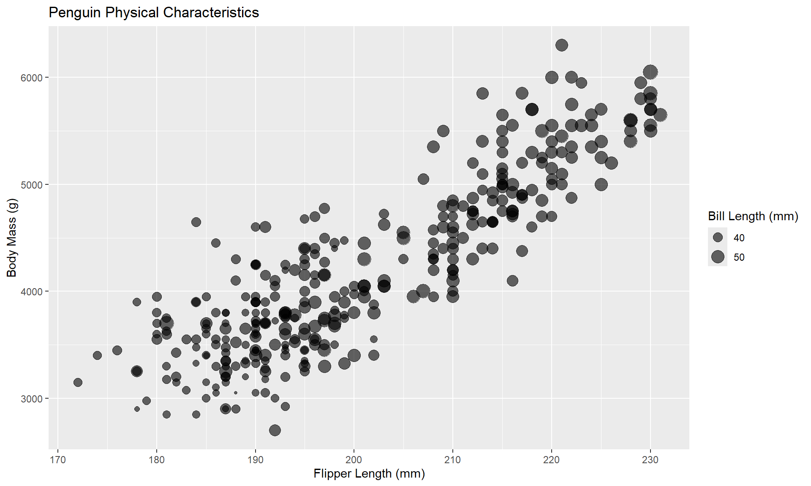
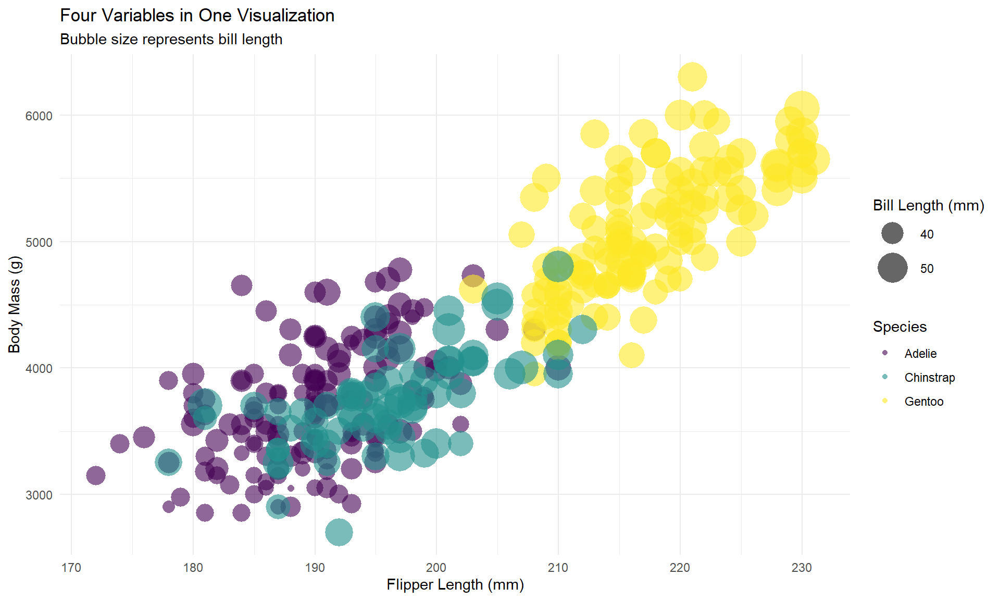
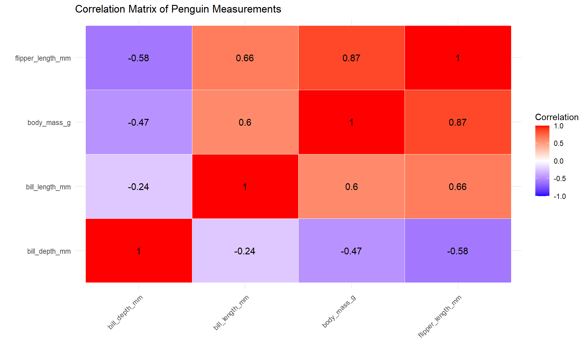
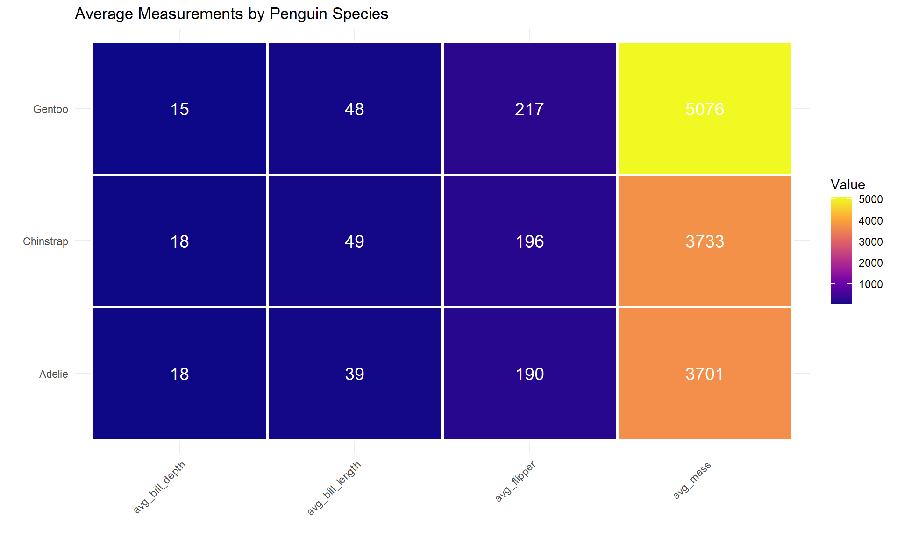
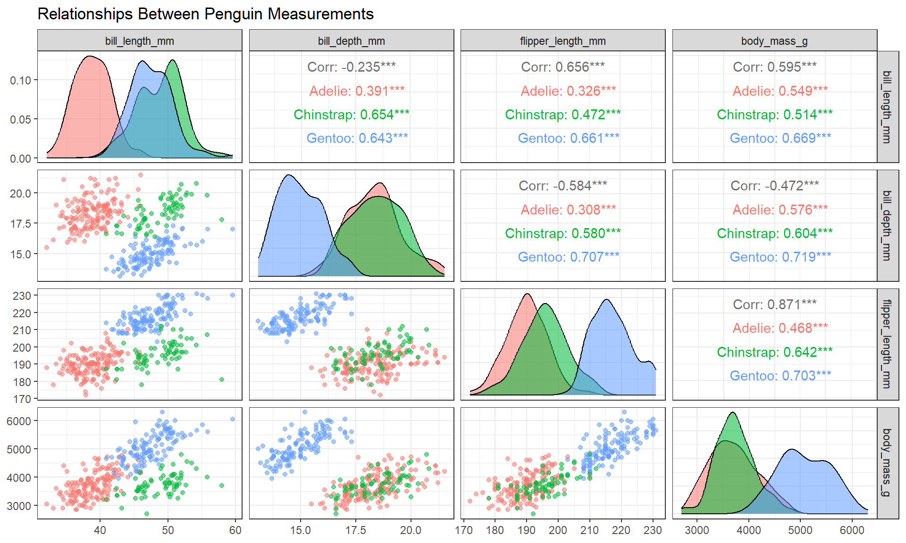
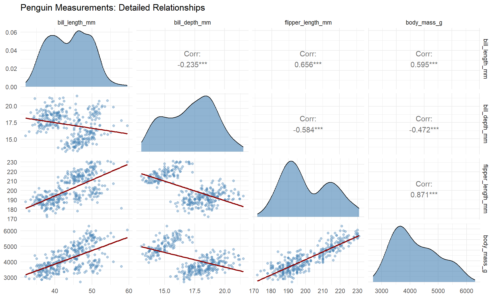
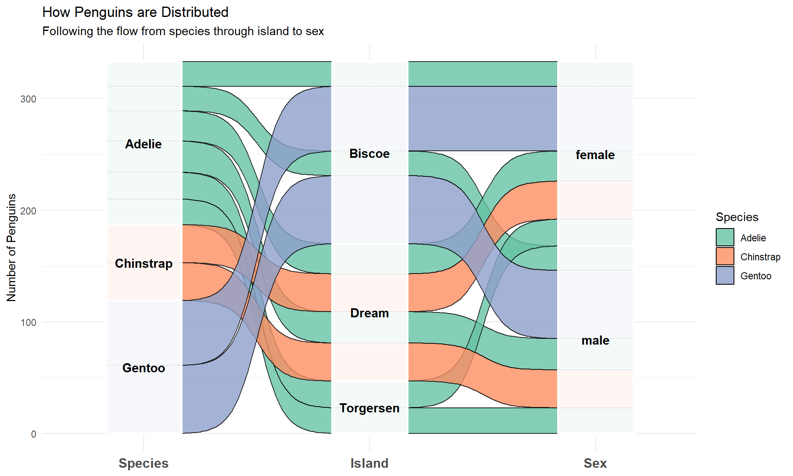
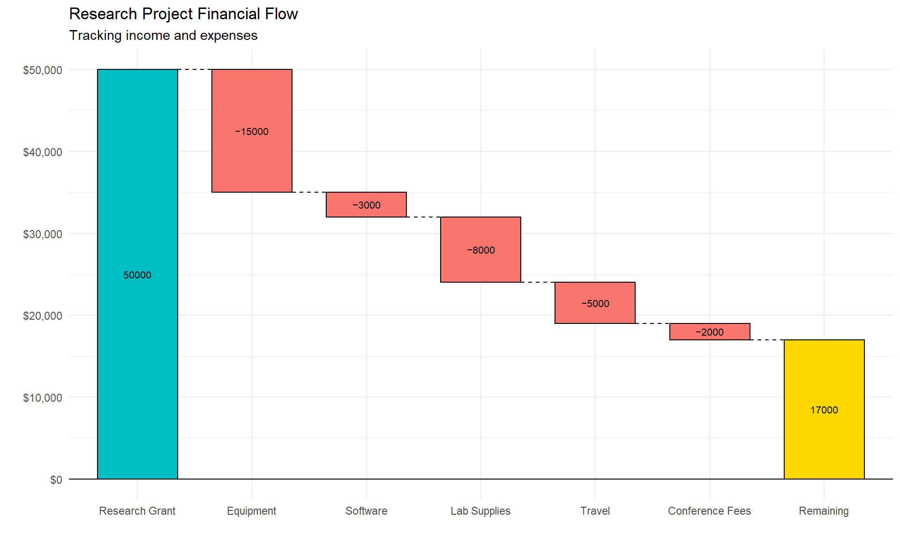
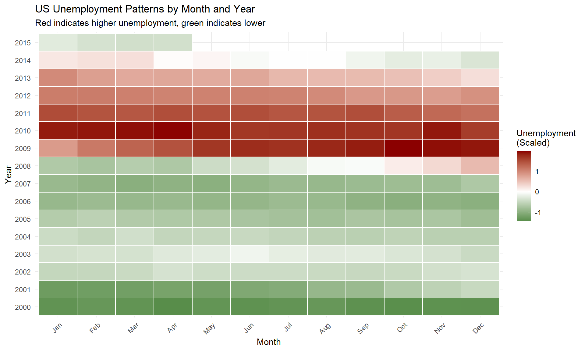

This chapter covers specialized visualization techniques that don’t fit neatly into other categories but are incredibly useful for specific types of data and questions. Think of these as tools for your “advanced visualization toolkit”—you won’t use them every day, but when you need them, they’re perfect for the job.
We’ll explore: - Visualizing three-dimensional relationships - Displaying flows and transitions - Creating comparison matrices - Specialized chart types for specific purposes
Let’s load our packages:
Warning: package 'ggplot2' was built under R version 4.4.3
Warning: package 'palmerpenguins' was built under R version 4.4.3
Warning: package 'dplyr' was built under R version 4.4.3
Bubble Charts: Three Variables on Two Axes
When you want to show three continuous variables simultaneously, bubble charts are an excellent choice. They’re essentially scatterplots where point size represents a third variable.
Basic Bubble Chart
Let’s explore the relationship between penguin flipper length, body mass, and bill length:

Enhanced Bubble Chart
Let’s improve this with better styling and add a fourth variable (species) using color:

The scale_size_continuous(range = c(2, 12)) controls the minimum and maximum bubble sizes.
Note: Bubble charts are controversial because humans are better at judging length than area. Use them when the approximate relationship is more important than exact values.
Correlation Heatmaps
Heatmaps display data values as colored cells, making patterns immediately visible. They’re particularly useful for comparing many variables at once.
Creating a Correlation Matrix
Let’s visualize correlations between penguin measurements:

Strong positive correlations appear in red, negative correlations in blue, and weak correlations in white.
Clustered Heatmap for Groups
Let’s create a heatmap showing average measurements by species:

Scatterplot Matrices
A scatterplot matrix shows relationships between multiple variables in a grid format. It’s like seeing all possible pairs of scatterplots at once.

Reading the matrix: - Diagonal: Distribution of each variable - Lower triangle: Scatterplots (row variable on y-axis, column variable on x-axis) - Upper triangle: Correlation coefficients
Custom Scatterplot Matrix
You can customize the appearance with your own functions:

Alluvial Diagrams: Visualizing Flows
Alluvial diagrams (also called Sankey diagrams) show how categorical variables relate to each other through flowing connections. They’re perfect for showing composition changes across groups.
Basic Alluvial Diagram
Let’s examine how penguins are distributed across species, islands, and sex:
How to read this: - Start on the left with species - Follow the flows to see how each species is distributed across islands - Continue following to see the sex distribution - Flow width represents the number of penguins
Enhanced Alluvial Diagram
Let’s create a more detailed version with better styling:

Waterfall Charts: Showing Cumulative Effects
Waterfall charts illustrate the cumulative effect of sequential positive and negative values. They’re commonly used in finance but work for any cumulative process.

Waterfall Chart with Net Total
Let’s add a total column to show the final balance:
This shows clearly how the initial grant is allocated across different expenses.
Advanced Heatmap: Time Series
Heatmaps are excellent for visualizing changes over time. Let’s create one using economic data:

This reveals seasonal patterns and trends across years.
Choosing the Right Specialized Chart
Chart Type
Best For
Avoid When
Bubble Chart
3-4 continuous variables
Need precise values
Heatmap
Many variables, patterns in matrices
Few data points
Scatterplot Matrix
Exploring relationships between 3-6 variables
More than 7 variables
Alluvial Diagram
Categorical flows, composition changes
Simple counts are sufficient
Waterfall Chart
Cumulative effects, sequential changes
All values are similar
Common Mistakes
Overcomplicating: Don’t use specialized charts when simple ones work better
Too many variables: Even specialized charts have limits (typically 4-8 variables)
Poor scaling: Always consider rescaling variables for fair comparisons
Missing context: These charts often need extra explanation—add subtitles and annotations
Wrong tool: Make sure your chart type matches your data structure
Practical Applications
Bubble Charts: Comparing countries on GDP, population, and life expectancy
How to display three or more variables using bubble charts
Creating heatmaps for patterns and correlations
Building scatterplot matrices for comprehensive exploration
Using alluvial diagrams for categorical flows
Making waterfall charts for cumulative effects
Creating radar charts for multi-dimensional comparisons
The key is knowing when to use each technique. Start simple, and only use these specialized charts when they truly add insight that simpler visualizations can’t provide.
---title: "Specialized Visualization Techniques"format: html: fig-width: 10 fig-height: 6 code-fold: show code-tools: true toc: true code-copy: true number_sections: true---# IntroductionThis chapter covers specialized visualization techniques that don't fit neatly into other categories but are incredibly useful for specific types of data and questions. Think of these as tools for your "advanced visualization toolkit"—you won't use them every day, but when you need them, they're perfect for the job.We'll explore:- Visualizing three-dimensional relationships- Displaying flows and transitions- Creating comparison matrices- Specialized chart types for specific purposesLet's load our packages:```{r}#| message: falselibrary(ggplot2)library(palmerpenguins)library(dplyr)```# Bubble Charts: Three Variables on Two AxesWhen you want to show three continuous variables simultaneously, bubble charts are an excellent choice. They're essentially scatterplots where point size represents a third variable.## Basic Bubble ChartLet's explore the relationship between penguin flipper length, body mass, and bill length:```{r}#| warning: falseggplot(penguins, aes(x = flipper_length_mm, y = body_mass_g,size = bill_length_mm)) +geom_point(alpha =0.6) +labs(title ="Penguin Physical Characteristics",x ="Flipper Length (mm)",y ="Body Mass (g)",size ="Bill Length (mm)")```## Enhanced Bubble ChartLet's improve this with better styling and add a fourth variable (species) using color:```{r}#| warning: falseggplot(penguins, aes(x = flipper_length_mm,y = body_mass_g,size = bill_length_mm,color = species)) +geom_point(alpha =0.6, shape =16) +scale_size_continuous(range =c(2, 12)) +scale_color_viridis_d() +labs(title ="Four Variables in One Visualization",subtitle ="Bubble size represents bill length",x ="Flipper Length (mm)",y ="Body Mass (g)",size ="Bill Length (mm)",color ="Species") +theme_minimal()```The `scale_size_continuous(range = c(2, 12))` controls the minimum and maximum bubble sizes.**Note**: Bubble charts are controversial because humans are better at judging length than area. Use them when the approximate relationship is more important than exact values.# Correlation HeatmapsHeatmaps display data values as colored cells, making patterns immediately visible. They're particularly useful for comparing many variables at once.## Creating a Correlation MatrixLet's visualize correlations between penguin measurements:```{r}#| warning: false#| message: false# Prepare data - select numeric columns onlypenguin_numeric <- penguins %>%select(bill_length_mm, bill_depth_mm, flipper_length_mm, body_mass_g) %>%na.omit()# Calculate correlation matrixcor_matrix <-cor(penguin_numeric)# Convert to long format for ggplotlibrary(tidyr)cor_long <- cor_matrix %>%as.data.frame() %>%mutate(var1 =rownames(.)) %>%pivot_longer(cols =-var1, names_to ="var2", values_to ="correlation")# Create heatmapggplot(cor_long, aes(x = var1, y = var2, fill = correlation)) +geom_tile(color ="white") +geom_text(aes(label =round(correlation, 2)), color ="black", size =4) +scale_fill_gradient2(low ="blue", mid ="white", high ="red",midpoint =0, limits =c(-1, 1)) +labs(title ="Correlation Matrix of Penguin Measurements",x ="", y ="", fill ="Correlation") +theme_minimal() +theme(axis.text.x =element_text(angle =45, hjust =1))```Strong positive correlations appear in red, negative correlations in blue, and weak correlations in white.## Clustered Heatmap for GroupsLet's create a heatmap showing average measurements by species:```{r}#| warning: false# Calculate means by speciesspecies_means <- penguins %>%group_by(species) %>%summarise(avg_bill_length =mean(bill_length_mm, na.rm =TRUE),avg_bill_depth =mean(bill_depth_mm, na.rm =TRUE),avg_flipper =mean(flipper_length_mm, na.rm =TRUE),avg_mass =mean(body_mass_g, na.rm =TRUE) ) %>%pivot_longer(cols =-species, names_to ="measurement",values_to ="value")# Create heatmap with scaled valuesggplot(species_means, aes(x = measurement, y = species, fill = value)) +geom_tile(color ="white", linewidth =1) +geom_text(aes(label =round(value, 0)), color ="white", size =5) +scale_fill_viridis_c(option ="plasma") +labs(title ="Average Measurements by Penguin Species",x ="", y ="", fill ="Value") +theme_minimal() +theme(axis.text.x =element_text(angle =45, hjust =1))```# Scatterplot MatricesA scatterplot matrix shows relationships between multiple variables in a grid format. It's like seeing all possible pairs of scatterplots at once.```{r}#| warning: false#| message: falselibrary(GGally)# Select variables for the matrixpenguin_subset <- penguins %>%select(bill_length_mm, bill_depth_mm, flipper_length_mm, body_mass_g, species) %>%na.omit()# Create scatterplot matrixggpairs(penguin_subset, aes(color = species, alpha =0.5),columns =1:4) +labs(title ="Relationships Between Penguin Measurements") +theme_bw()```**Reading the matrix**:- **Diagonal**: Distribution of each variable- **Lower triangle**: Scatterplots (row variable on y-axis, column variable on x-axis)- **Upper triangle**: Correlation coefficients## Custom Scatterplot MatrixYou can customize the appearance with your own functions:```{r}#| warning: false#| message: false# Custom function for density plotsmy_density <-function(data, mapping, ...) {ggplot(data = data, mapping = mapping) +geom_density(alpha =0.6, fill ="steelblue")}# Custom function for scatterplotsmy_scatter <-function(data, mapping, ...) {ggplot(data = data, mapping = mapping) +geom_point(alpha =0.4, color ="steelblue", size =1.5) +geom_smooth(method ="lm", se =FALSE, color ="darkred", linewidth =0.8)}# Create customized matrixpenguin_numeric_only <- penguins %>%select(bill_length_mm, bill_depth_mm, flipper_length_mm, body_mass_g) %>%na.omit()ggpairs(penguin_numeric_only,lower =list(continuous = my_scatter),diag =list(continuous = my_density)) +labs(title ="Penguin Measurements: Detailed Relationships") +theme_minimal()```# Alluvial Diagrams: Visualizing FlowsAlluvial diagrams (also called Sankey diagrams) show how categorical variables relate to each other through flowing connections. They're perfect for showing composition changes across groups.## Basic Alluvial DiagramLet's examine how penguins are distributed across species, islands, and sex:```{r}#| warning: false#| message: falselibrary(ggalluvial)# Prepare datapenguin_flows <- penguins %>%filter(!is.na(sex)) %>%group_by(species, island, sex) %>%summarise(count =n(), .groups ="drop")# Create alluvial diagramggplot(penguin_flows,aes(axis1 = species,axis2 = island,axis3 = sex,y = count)) +geom_alluvium(aes(fill = species), alpha =0.7) +geom_stratum(alpha =0.8) +geom_text(stat ="stratum", aes(label =after_stat(stratum))) +scale_x_discrete(limits =c("Species", "Island", "Sex"),expand =c(0.1, 0.1)) +scale_fill_viridis_d() +labs(title ="Penguin Distribution Across Categories",y ="Count") +theme_minimal() +theme(legend.position ="none")```**How to read this**:- Start on the left with species- Follow the flows to see how each species is distributed across islands- Continue following to see the sex distribution- Flow width represents the number of penguins## Enhanced Alluvial DiagramLet's create a more detailed version with better styling:```{r}#| warning: falseggplot(penguin_flows,aes(axis1 = species,axis2 = island,axis3 = sex,y = count)) +geom_alluvium(aes(fill = species), color ="black", alpha =0.8,curve_type ="sigmoid") +geom_stratum(alpha =0.9, color ="white", linewidth =1) +geom_text(stat ="stratum", aes(label =after_stat(stratum)),size =4, fontface ="bold") +scale_x_discrete(limits =c("Species", "Island", "Sex"),expand =c(0.15, 0.15)) +scale_fill_brewer(palette ="Set2") +labs(title ="How Penguins are Distributed",subtitle ="Following the flow from species through island to sex",y ="Number of Penguins",fill ="Species") +theme_minimal() +theme(axis.text.x =element_text(size =12, face ="bold"))```# Waterfall Charts: Showing Cumulative EffectsWaterfall charts illustrate the cumulative effect of sequential positive and negative values. They're commonly used in finance but work for any cumulative process.```{r}#| warning: falselibrary(waterfalls)# Create sample budget databudget <-data.frame(category =c("Research Grant", "Equipment", "Software", "Lab Supplies", "Travel", "Conference Fees"),amount =c(50000, -15000, -3000, -8000, -5000, -2000))# Create basic waterfall chartwaterfall(budget) +labs(title ="Research Budget Breakdown",x ="", y ="Amount ($)") +theme_minimal()```## Waterfall Chart with Net TotalLet's add a total column to show the final balance:```{r}#| warning: falsewaterfall(budget,calc_total =TRUE,total_axis_text ="Remaining",total_rect_text_color ="black",total_rect_color ="gold") +scale_y_continuous(labels = scales::dollar) +labs(title ="Research Project Financial Flow",subtitle ="Tracking income and expenses",x ="", y ="") +theme_minimal()```This shows clearly how the initial grant is allocated across different expenses.# Advanced Heatmap: Time SeriesHeatmaps are excellent for visualizing changes over time. Let's create one using economic data:```{r}#| warning: false# Prepare time series dataecon_monthly <- economics %>%mutate(year = lubridate::year(date),month = lubridate::month(date, label =TRUE)) %>%filter(year >=2000, year <=2015) %>%select(year, month, unemploy) %>%mutate(unemploy_scaled =scale(unemploy)[,1])# Create heatmapggplot(econ_monthly, aes(x = month, y =factor(year), fill = unemploy_scaled)) +geom_tile(color ="white", linewidth =0.5) +scale_fill_gradient2(low ="darkgreen", mid ="white", high ="darkred",midpoint =0,name ="Unemployment\n(Scaled)") +labs(title ="US Unemployment Patterns by Month and Year",subtitle ="Red indicates higher unemployment, green indicates lower",x ="Month", y ="Year") +theme_minimal() +theme(axis.text.x =element_text(angle =45, hjust =1))```This reveals seasonal patterns and trends across years.# Choosing the Right Specialized Chart| Chart Type | Best For | Avoid When ||------------|----------|------------|| **Bubble Chart** | 3-4 continuous variables | Need precise values || **Heatmap** | Many variables, patterns in matrices | Few data points || **Scatterplot Matrix** | Exploring relationships between 3-6 variables | More than 7 variables || **Alluvial Diagram** | Categorical flows, composition changes | Simple counts are sufficient || **Waterfall Chart** | Cumulative effects, sequential changes | All values are similar |# Common Mistakes1. **Overcomplicating**: Don't use specialized charts when simple ones work better2. **Too many variables**: Even specialized charts have limits (typically 4-8 variables)3. **Poor scaling**: Always consider rescaling variables for fair comparisons4. **Missing context**: These charts often need extra explanation—add subtitles and annotations5. **Wrong tool**: Make sure your chart type matches your data structure# Practical Applications**Bubble Charts**: Comparing countries on GDP, population, and life expectancy**Heatmaps**: Showing gene expression levels, website traffic patterns, correlation matrices**Scatterplot Matrices**: Initial data exploration in multivariate analysis**Alluvial Diagrams**: Customer journey maps, migration patterns, survey flow analysis**Waterfall Charts**: Budget tracking, profit/loss statements, inventory changes# Practice Exercises1. Create a bubble chart with penguin data using bill dimensions and body mass2. Make a correlation heatmap for the `economics` dataset numeric variables3. Build an alluvial diagram showing penguin distribution across all three categorical variables4. Create a scatterplot matrix colored by penguin sex5. Make a waterfall chart showing hypothetical monthly savings (mix of income and expenses)# SummarySpecialized visualizations extend your analytical toolkit beyond basic charts. You've learned:- How to display three or more variables using bubble charts- Creating heatmaps for patterns and correlations- Building scatterplot matrices for comprehensive exploration- Using alluvial diagrams for categorical flows- Making waterfall charts for cumulative effects- Creating radar charts for multi-dimensional comparisonsThe key is knowing when to use each technique. Start simple, and only use these specialized charts when they truly add insight that simpler visualizations can't provide.# Further Resources- [ggplot2 Extensions Gallery](https://exts.ggplot2.tidyverse.org/)- [R Graph Gallery](https://r-graph-gallery.com/)- [Data Visualization with R](https://rkabacoff.github.io/datavis/)- [The Visual Display of Quantitative Information](https://www.edwardtufte.com/tufte/books_vdqi) by Edward Tufte- [Fundamentals of Data Visualization](https://clauswilke.com/dataviz/) by Claus Wilke